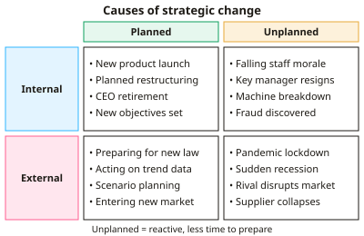

A-level Business Year 13 · Topic 9
Managing strategic change
This topic is about managing strategic change, why it happens and why it so often goes wrong.
We use Lewin's force field and three-step models, Kotter and Schlesinger on resistance, and Handy and Hofstede on culture.
We finish with structure, leadership, implementation and the causes of corporate failure.
- 7 subtopics
- 247 questions
- Free: 9.1 notes and 10 questions
In this topic
- 9.1Causes of change: internal and external, planned and unplannedFree below · 28 questions
- 9.2Lewin's force field analysis and model of changeOpen in Full Marks · 68 questions
- 9.3Resistance to change and Kotter and SchlesingerOpen in Full Marks · 20 questions
- 9.4Organisational culture: Handy and HofstedeOpen in Full Marks · 29 questions
- 9.5Organisational structure and structural changeOpen in Full Marks · 28 questions
- 9.6Leadership and the management of strategic changeOpen in Full Marks · 36 questions
- 9.7Strategic implementation, problems with strategy and corporate failureOpen in Full Marks · 38 questions
9.1 · Free notes
Causes of change: internal and external, planned and unplanned

Key points
- Strategic change is a significant shift in a business's direction, structure, culture or operations. It is usually needed to achieve objectives, survive or stay competitive.
- Internal causes come from inside the business. Examples are poor financial performance, a new CEO or owner, growth, a merger or takeover, new products, changed objectives, low morale or technology failure.
- External causes come from the environment. Use PESTLE to organise them: political, economic (recession, exchange rates), social (changing tastes), technological, legal (new regulation) and environmental.
- Competitor actions and market changes are external causes. A disruptive rival or a shift to online shopping can force a business to alter its strategy.
- Planned change is anticipated and managed proactively, with clear objectives, timescales and resources. Examples are a scheduled restructure or entry to a new market.
- Unplanned (reactive) change is forced by sudden events such as a pandemic, a supplier collapse, a scandal or a key manager resigning. Managers have little time to prepare.
- Unplanned change is usually more costly and risky. Communication is rushed, resistance is more likely and decisions may be poorly thought through.
- Scenario planning and contingency planning help firms prepare for possible shocks. They turn some unplanned events into more manageable, partly planned responses.
- Strategic drift (Johnson) occurs when a firm's strategy gradually fails to keep pace with a changing environment. It can lead to crisis and sudden transformational change.
- Change can be incremental (small, gradual adjustments) or transformational (large-scale, affecting the whole organisation). Transformational change is more likely after a crisis.
- In exam answers, classify the cause (internal or external, planned or unplanned) and then link it to the context. Evaluate by judging which cause is most significant and how quickly the firm must respond.
In more detail
- Planned change example: a retailer announces a three-year plan to move half its sales online, with a budget, a timescale and a training programme.
- Unplanned change example: the COVID-19 lockdowns forced restaurants to switch to takeaway and delivery almost overnight.
- Strategic drift example: Kodak built an early digital camera in 1975 but stayed focused on film, and it filed for bankruptcy protection in 2012.
- Incremental vs transformational: adding a new product line is incremental, while moving from selling products to selling subscriptions transforms the whole business model.
Practice
Causes of change: internal and external, planned and unplanned: 10 questions
Pick an answer to check it, or open the answer for the explanation.
1. Which of the following is an internal cause of strategic change for a company?
- A new competitor entering the market
- New data protection legislation
- A rise in the Bank of England base rate
- A new CEO with a different vision for the firm
Show answer
D: A new CEO with a different vision for the firm. A new CEO comes from within the organisation and can alter objectives and strategy. The other three are external factors (competitive, economic and legal).
2. A restaurant chain closes half its sites after a sudden government lockdown. This is best described as which type of change?
- External and planned
- Internal and planned
- Internal and unplanned
- External and unplanned
Show answer
D: External and unplanned. The lockdown originates outside the business (external) and could not be foreseen or scheduled (unplanned), so the response is reactive.
3. Which statement best describes planned change?
- It never meets resistance from staff
- It only occurs after a takeover
- Managers anticipate the need and set objectives, timescales and resources
- It is a crisis response made with no preparation
Show answer
C: Managers anticipate the need and set objectives, timescales and resources. Planned change is proactive: managers identify the need in advance and manage it with clear objectives and resources. Resistance can still occur.
4. Why might scenario planning reduce the damage caused by external shocks?
- It guarantees that forecasts will be accurate
- It stops competitors from reacting
- It removes the need for managers to make decisions
- It prepares contingency responses to possible future events
Show answer
D: It prepares contingency responses to possible future events. Scenario planning considers several possible futures and prepares responses in advance, so a shock is met with a ready plan rather than a panic reaction.
5. Sales at a UK bookshop chain fall 15% as customers move online. It closes shops and launches an app. The main cause of change is:
- A new CEO's personal preference
- A planned merger with a rival
- An internal fall in staff morale
- External changes in technology and consumer behaviour
Show answer
D: External changes in technology and consumer behaviour. Shifts in how customers shop (social) enabled by online technology (technological) are external PESTLE factors that forced the strategic response.
6. What does Johnson's concept of strategic drift describe?
- A planned move into overseas markets
- A change of business ownership
- A sudden change caused by a natural disaster
- A strategy gradually failing to keep pace with a changing environment
Show answer
D: A strategy gradually failing to keep pace with a changing environment. Strategic drift is a gradual divergence between strategy and the environment. It often ends in crisis and the need for transformational change.
7. A firm's annual profit falls from £8.0m to £5.6m, triggering a restructure. What is the percentage fall in profit?
- 25%
- 43%
- 30%
- 70%
Show answer
C: 30%. Fall = £2.4m. Percentage change = 2.4 ÷ 8.0 × 100 = 30%. Dividing by the new figure (5.6) would wrongly give 43%.
8. Two manufacturers agree to merge and must integrate IT systems and cultures. This change is best classified as:
- Internal and planned
- Internal and unplanned
- External and unplanned
- External and caused by PESTLE
Show answer
A: Internal and planned. A merger is a deliberate strategic decision made by the firms, so the resulting change is planned and originates internally.
9. A new law raises the National Living Wage, forcing a café chain to restructure staff rotas. Which PESTLE factor is the cause?
- Environmental
- Legal
- Technological
- Social
Show answer
B: Legal. Legislation that changes employment costs is a legal factor. It is external and the firm has to respond to it.
10. Which event is most likely to cause unplanned internal change?
- An annual budget review
- The planned opening of a new factory
- A scheduled rebranding campaign
- The sudden resignation of the finance director
Show answer
D: The sudden resignation of the finance director. A sudden resignation is unforeseen and arises inside the firm. The other options are scheduled and therefore planned.
Keep going in Full Marks
Full Marks has 28 questions on Causes of change: internal and external, planned and unplanned (18 more than here), set out in practice levels. You also get notes and 3D models for all 7 subtopics of Managing strategic change, plus games, timed exams and past papers.